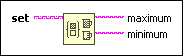
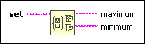

Read Set Max & Min Function
Owning Palette: Set VIs and Functions
Requires: Base Development System
Returns the maximum and minimum elements in a set.

 Add to the block diagram Add to the block diagram |
 Find on the palette Find on the palette |
Owning Palette: Set VIs and Functions
Requires: Base Development System
Returns the maximum and minimum elements in a set.

| Add to the block diagram |
Find on the palette |